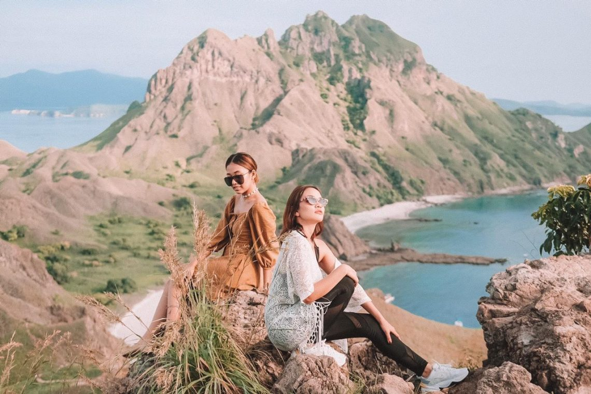
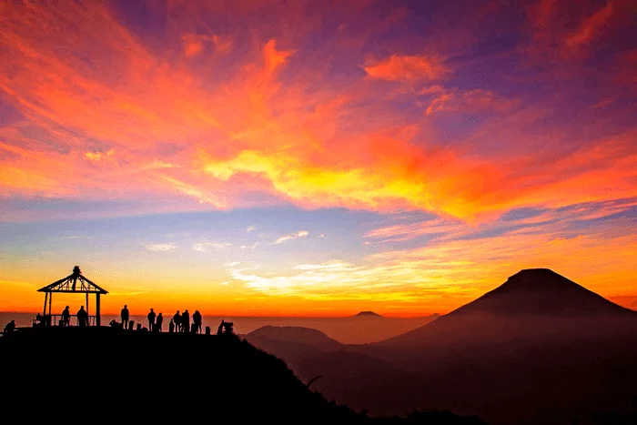
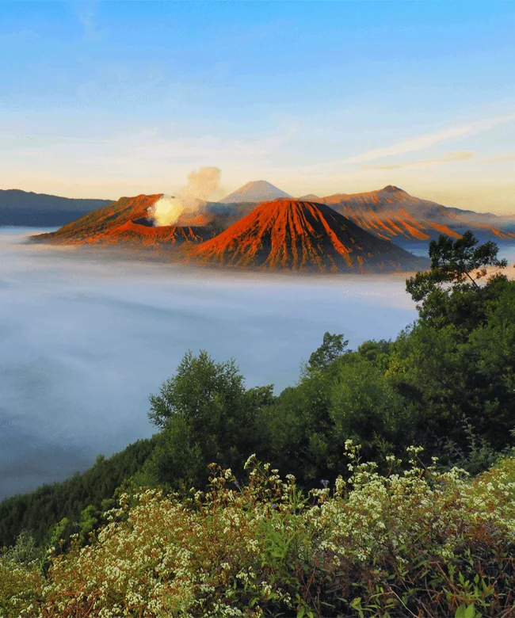
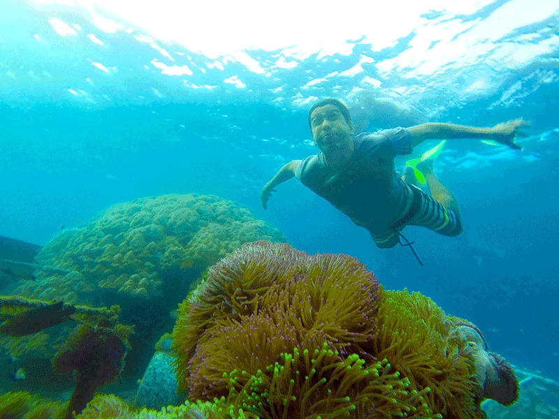

Selamat Datang di Surga Wisata
Kami disini Menyediakan berbagai trip wisata keliling Indonesia

Kami disini Menyediakan berbagai trip wisata keliling Indonesia
"Pintu Gerbang ke Petualangan" - Sambutlah petualangan dengan lengan terbuka melalui situs web kami yang menghadirkan destinasi wisata paling menarik dari berbagai belahan dunia. Temukan tempat-tempat eksotis, aktivitas seru, dan akomodasi yang nyaman untuk perjalanan Anda.
Kami Menyediakan :Foto Wisata |
Deskripsi |
Penjelasan |
|  | Labuan Bajo merupakan sebuah surga tersembunyi yang ada di Indonesia bagian timur. Desa ini terletak di Kecamatan Komodo, Kabupaten Manggarai Barat, Provinsi Nusa Tenggara Timur yang berbatasan langsung dengan Nusa Tenggara Barat dan dipisahkan oleh Selat Sape. Labuan Bajo adalah salah satu dari lima Destinasi Super Prioritas yang sedang dikembangkan di Indonesia. |
Nama : Labuan Bajo Paket Perjalanan : Rp. 2.125.000 Daerah : Nusa Tenggara Timur Fasilitas :
|
|  | Dataran tinggi Dieng atau Plato Dieng adalah sebuah wilayah di pusat Jawa Tengah yang memiliki ciri geologi, sejarah, dan pertanian yang dinilai khas.[oleh siapa?] Dataran ini diapit oleh jajaran perbukitan di sisi utara dan selatannya, yang berasal dari aktivitas vulkanik yang sama dan disebut Pegunungan Dieng. Pegunungan Dieng sendiri secara geografis berada di antara kompleks Puncak Rogojembangan di sebelah barat dan pasangan Gunung Sindoro dan Gunung Sumbing di sisi timurnya. Secara kasar dapat dikatakan bahwa wilayah Dataran tinggi Dieng menempati kawasan berukuran lebar (utara–selatan) 4–6 km dan panjang (barat–timur) 11 km.[1] |
Nama : Dataran Tinggi Dieng Paket Perjalanan : Rp. 780.000 Daerah : Nusa Tenggara Timur Fasilitas :
|
|  | Gunung Bromo merupakan salah satu gunung dari lima gunung yang terdapat di komplek Pegunungan Tengger di laut pasir. Daya tarik gunung ini adalah merupakan gunung yang masih aktif dan dapat dengan mudah didaki/dikunjungi. Obyek wisata Gunung Bromo ini merupakan fenomena dan atraksi alami yang merupakan salah satu daya tarik pengunjung. Kekhasan gejala alam yang tidak ditemukan di tempat lain adalah adanya kawah di tengah kawah (creater in the creater) dengan hamparan laut pasir yang mengelilinginya. |
Nama : Gunung Bromo Midnight Sunrise Paket Perjalanan : Rp. 350.000 Daerah : Jawa Timur Fasilitas :
|
|  | Pulau Pahawang menyuguhkan laut biru dan pasir putih yang luar biasa indah. Sepanjang mata memandang pantai terbentang di bagian di bagian utara, timur dan selatan. Sementara sisanya diisi oleh rimbunan hutan mangrove. |
Nama : Gunung Bromo Midnight Sunrise Paket Perjalanan : Rp. 350.000 Daerah : Jawa Timur Fasilitas :
|